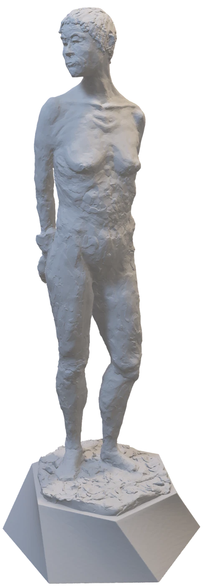

Learning through sculpture
A space to keep learning with my hands. Working with volume, posture and surface gives me another way to look closely, moving between observation, physical materials and digital studies.
The selected works include Gandhi (2018, plaster and glasses), Young Athlete / Marco (2022, plaster), Marching Clown (2024, wax and wood) and Resting Diana / Maria (2026, clay and 3D render).
Resting Diana (Maria)

Loading the sculpture…
Drag to turn. Scroll or pinch to zoom. You can also use the buttons or keyboard.